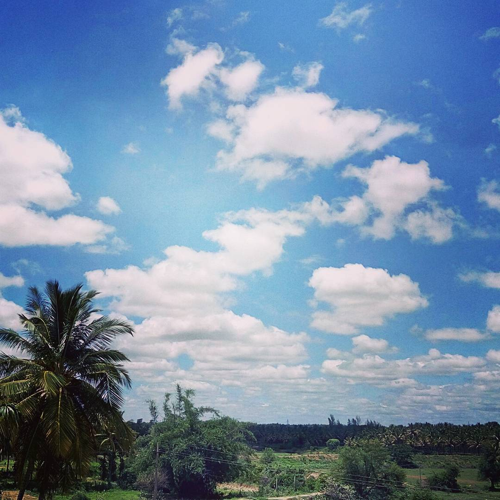

Esimerkkisää Vantaalla
Tämä on staattinen esimerkkidata, ei reaaliaikainen sääennuste.
Lämpötila: 15 °C
Säätila: Puolipilvistä
Tuuli: 4 m/s
Ilmankosteus: 70 %

Tulevia ominaisuuksia
Palvelua kehitetään kurssin aikana vaiheittain. Suunniteltuja ominaisuuksia ovat:
- Ajankohtainen sää
- Päivän ennuste
- Tulevien päivien ennuste
Myöhemmin säätiedot haetaan Open-Meteo-palvelusta.